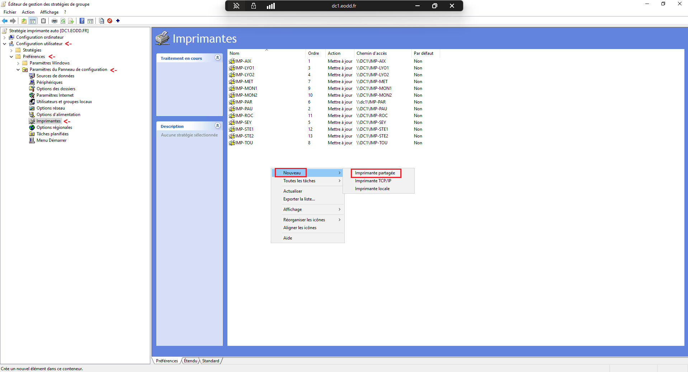
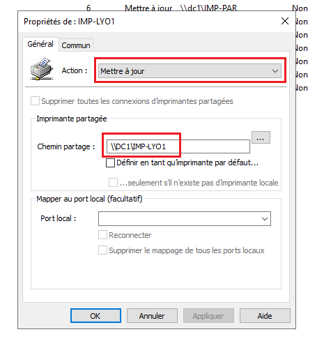
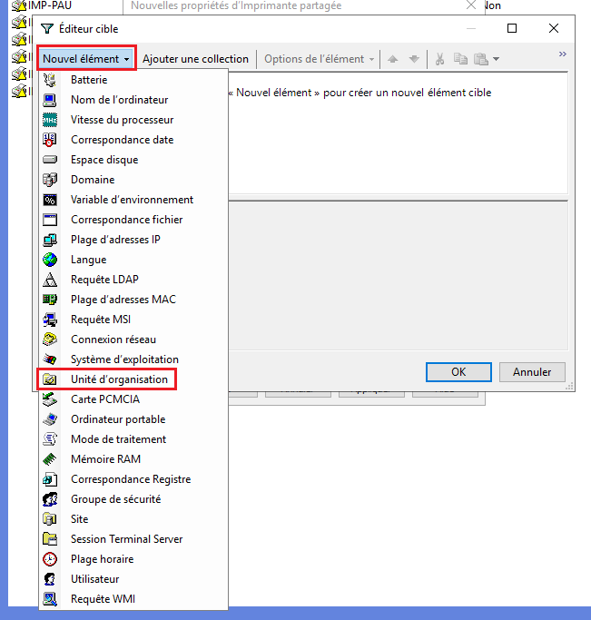
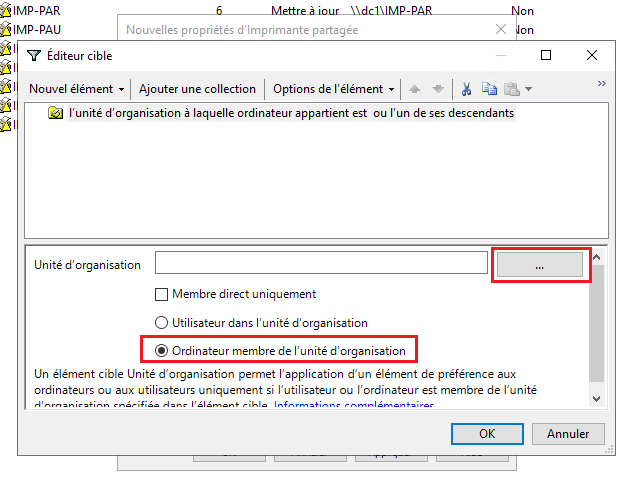
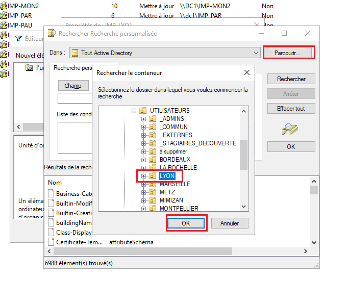

Disparition récurrente des imprimantes réseau sur les postes clients après redémarrage ou reconnexion de session. Les mappages étaient réalisés manuellement sans persistance centralisée, générant des interruptions et des tickets support.
Mise en place d'une GPO de Préférences de Stratégie de Groupe (GPP). Les imprimantes sont mappées automatiquement à l'ouverture de session selon le site géographique de l'ordinateur grâce au ciblage par OU.
| Unité d'Organisation (Site) | Imprimante(s) Réseau Déployée(s) | Chemin UNC Partagé (Serveur d'impression) |
|---|---|---|
| OU=LYON | IMP-LYO1 / IMP-LYO2 | \\DC1\IMP-LYO1 / \\DC1\IMP-LYO2 |
| OU=MARSEILLE | IMP-MAR | \\DC1\IMP-MAR |
| OU=METZ | IMP-MET | \\DC1\IMP-MET |
Navigation dans : Configuration utilisateur > Préférences > Paramètres du Panneau de configuration > Imprimantes. Clic droit > Nouveau > Imprimante partagée.

Sélection de l'action Mettre à jour (Update) et saisie du chemin réseau partagé \\DC1\IMP-LYO1. L'imprimante est recréée si elle a été supprimée.

Activation de l'option Exécuter dans le contexte de sécurité de l'utilisateur connecté et activation de la case Ciblage au niveau de l'élément.

Ajout d'une condition : Nouvel élément > Unité d'organisation. Sélection de l'option Ordinateur membre de l'unité d'organisation.

Parcours de l'arborescence Active Directory pour lier formellement la règle à l'Unité d'Organisation cible (ex : OU=LYON). Seuls les postes de travail rattachés à cette OU reçoivent le mappage de l'imprimante associée.

Contrairement aux scripts de connexion traditionnels (VBS/BAT), les préférences GPP avec action « Mettre à jour » ne s'exécutent pas inutilement si l'imprimante est déjà présente et conforme, tout en garantissant sa réinstallation immédiate si l'utilisateur l'a retirée par erreur.
Pour forcer l'actualisation immédiate des stratégies et lister les imprimantes :
L'imprimante réseau doit apparaître avec le type Connection.
Contrôles visuels et traces système sur le poste client :
Vérifier que la GPO d'imprimantes est bien listée sous les Objets Stratégie de groupe appliqués.
Sous Windows 10/11, si une restriction Point and Print empêche l'installation silencieuse du pilote d'impression,
s'assurer que les pilotes déployés sur le serveur d'impression sont de type Package-Aware (Type 4 ou Type 3 certifiés)
ou configurer la stratégie d'approbation Point and Print autorisant le serveur DC1.EODD.FR.